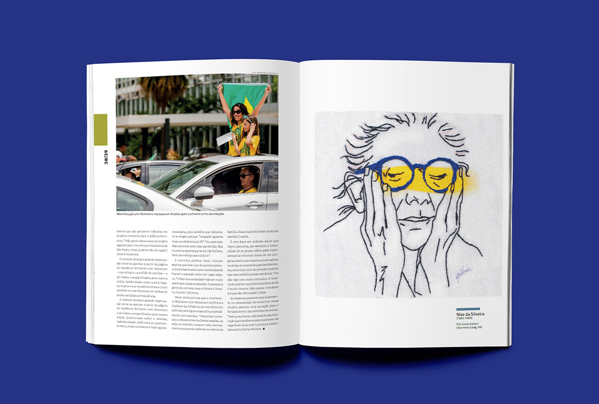
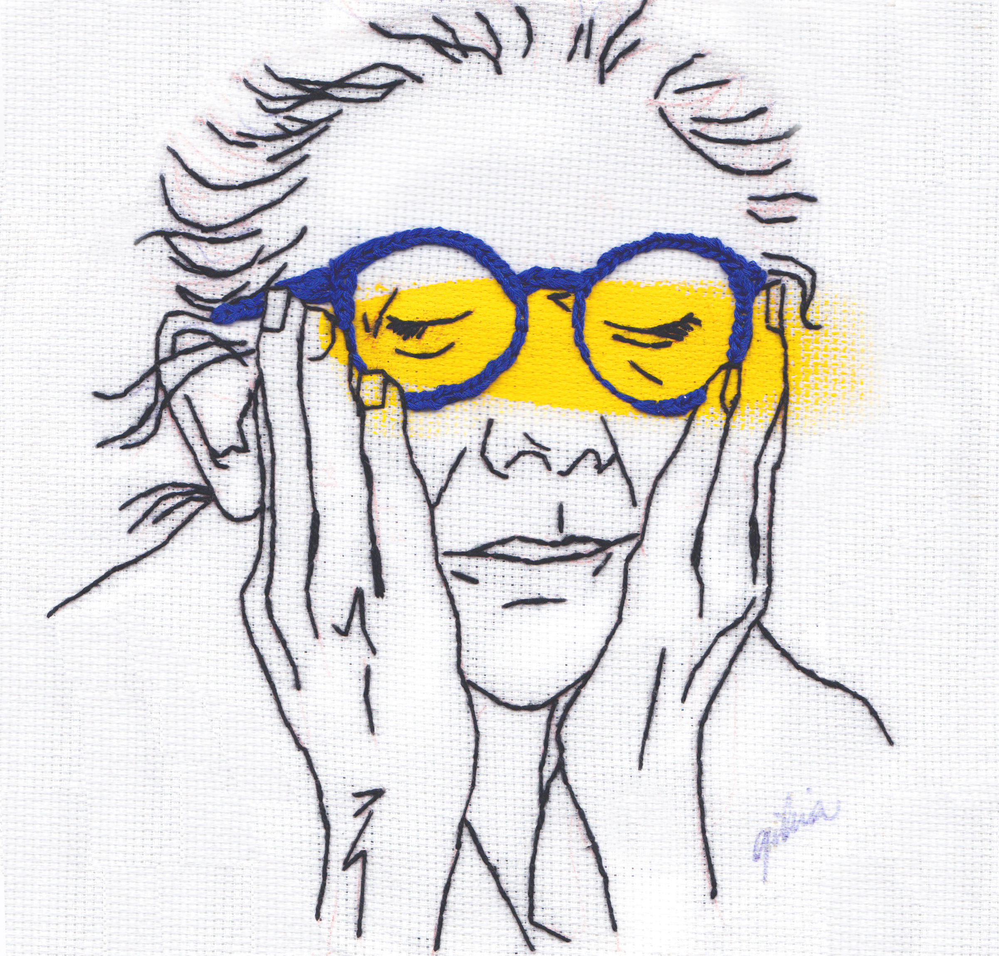
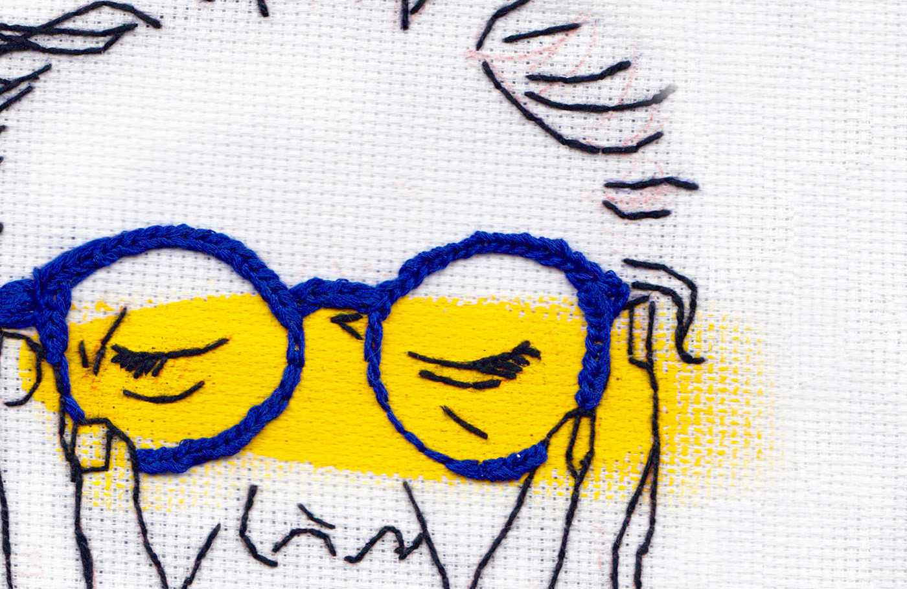
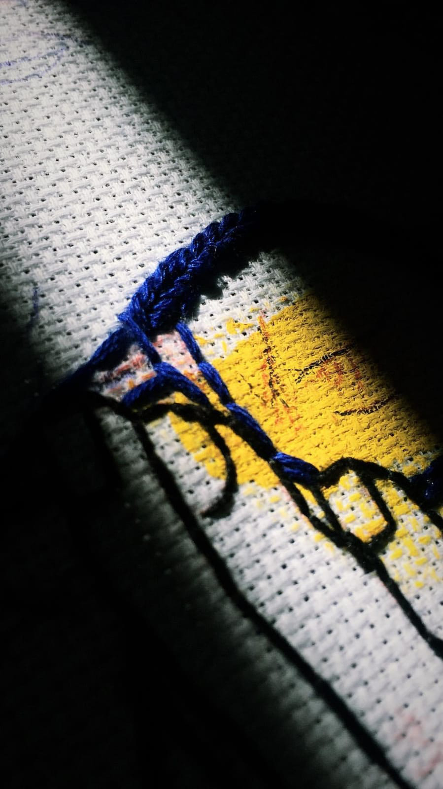
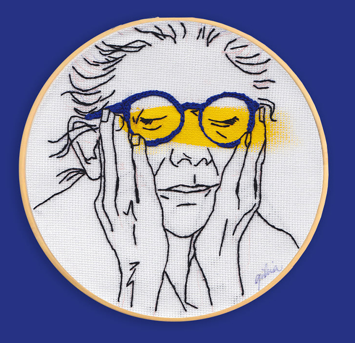

nise à mão
projeto experimental desenvolvido por: Giulia Golfari para a revista Plural
este bordado ilustra uma minúscula parte de quem foi Nise da Silveira. feito para a
revista Plural em uma edição sobre mulheres, Nise foi A mulher que eu escolhi para
ilustrar. Nise da Silveira foi uma médica psiquiatra brasileira. reconhecida
mundialmente por sua contribuição à psiquiatria, revolucionou o tratamento mental
no Brasil. Com detalhe em amarelo e azul, é destacado os olhos de Nise. feito com
muito amor e carinho, hoje a psiquiatra ilustra a revista de forma única.




